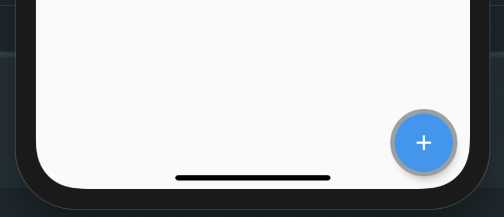
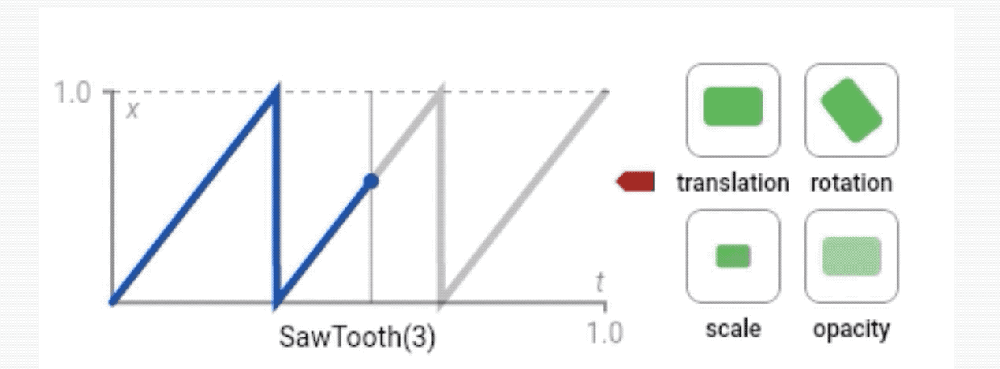
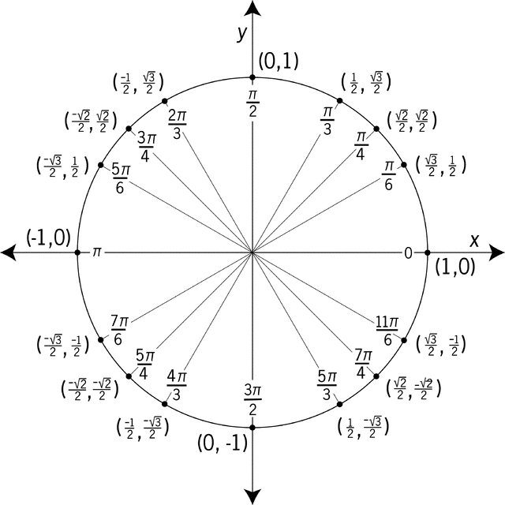
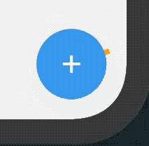

Flutter Canvas I - Wrap your FAB in a custom progress loader
I start this Flutter series writing about how to paint to Canvas in Flutter, and how to use it to create our own circled progress loader around a FloatingActionButton ✨
Canvas
Flutter provides support for painting to canvas, as almost every other framework that has a rendering side. There are some very didactic posts written by @NieBin available in this repo that were enlightening for me. Take a look if you’re interested in custom painting in Flutter.
Overall, and if you come from Android like me, you’ll might not find many new features into the Flutter Paint and Canvas, but that doesn’t mean they’re not powerful. They’re as powerful as their Android counterparts. Actually almost any existing Android code for painting to Canvas might be easily translatable almost 1 to 1 to Flutter. So you can port all your old custom views!
The problem
I want to explore the idea of building something similar to what I built for Android long ago in the FABProgressCircle library. It’s something like this:
The user needs to click the button to start a download process.
For this lesson we’ll just focus on the progress arc indeterminate animation, leaving the completion animation for further posts. Let’s try to move step by step.
To achieve an indeterminate progress we could just use the Flutter built in CircularProgressIndicator right away, but for the purpose of learning we’ll write it from scratch. That will also leave more room for tweaking the animation in further posts, and maybe creating our own Flutter package.
To be completely honest beforehand, I’ll grab some mathematical calculations from Flutter’s CircularProgressIndicator implementation, given that will make the progress much easier for everyone.
The solution
If you want to paint to Canvas in Flutter, CustomPaint is your friend. If you had the chance to read the previously mentioned series from @NieBin then you already know what is it. For newcomers, it’s a custom widget that gives you a canvas to paint over during the paint phase.
It has some constructor arguments like a painter, a child widget and a foregroundPainter. Both painter and foregroundPainter are delegates for painting to Canvas.
When asked to paint, CustomPaint does the following things (in order):
- Asks its
painterto paint on the current canvas. - Paints its child widget.
- After painting its child, it asks its
foregroundPainterto paint on top of everything.
We want to wrap a FloatingActionButton, so that will be our child in this case. We also want to draw on top of it, so the FAB does not cast its shadow over our progress loader. That will make it feel as if both were resting at the same elevation. In other words, we will be interested in the foregroundPainter property to draw the arc.
We are passing a CustomPainter as the foregroundPainter, and it will require some input arguments to render the current arc state.
class ArcPainter extends CustomPainter {
ArcPainter({
this.strokeWidth,
this.backgroundColor,
this.valueColor,
this.headValue,
this.tailValue,
this.stepValue,
this.rotationValue
})
// ...
}
We want to be able to configure the following properties:
strokeWidth: For the arc thickness.backgroundColor: We want to provide an optional background for the arc that will fill the complete circumference, so we can render the actual arc on top of it and achieve an interesting contrast.color: The actual arc color.
Then we’ll also pass four properties that will help on determining the current length of the arc sweep and rotation.
headValue: The current value for the arc head.tailValue: The current value for the arc tail.stepValue: The current progress value.rotationValue: The current rotation value for the whole arc.
The CustomPaint is stateless, so it gets built again for every single rendering tick. On each tick we will need to pass the proper values to the mentioned properties. We’ll learn how to calculate the head, tail, step and rotation values later.
Let’s override the paint method to perform our painting.
class ArcPainter extends CustomPainter {
ArcPainter({
this.strokeWidth,
this.backgroundColor,
this.valueColor,
this.headValue,
this.tailValue,
this.stepValue,
this.rotationValue
})
// ...
@override
void paint(Canvas canvas, Size size) {
// ...
}
}
We will start by something simple: Painting the background circle.
class ArcPainter extends CustomPainter {
// ...
@override
void paint(Canvas canvas, Size size) {
if (backgroundColor != null) {
final Paint backgroundPaint = Paint()
..color = backgroundColor
..strokeWidth = strokeWidth
..style = PaintingStyle.stroke;
canvas.drawArc(
Offset(-strokeWidth / 2, -strokeWidth / 2) &
Size(size.width + strokeWidth, size.height + strokeWidth),
0,
2 * pi, // complete circumference
false,
backgroundPaint);
}
}
}
I would recommended to avoid creating objects during the painting phase for performance reasons, given it can be called multiple times and you end up creating tons of objects, one per rendering tick. But let’s keep it simple for the sake of the example. Here we are:
- Creating a
Paintand configuring it with the passedbackgroundColor,strokeWidth, and using thePaintingStyle.strokefor just painting a stroke. - The first argument for
drawArc()is the rectangle for rendering the arc into (arc boundaries). To create the rectangle I’m using aSizefor the bottom right corner and anOffsetfor the top left. - Then we need to pass the start angle and the complete sweep angle, which determines the length of the background arc. We start on angle
0and end on angle2 * pi(complete circumference in radians, so we cover the whole circle). - Then we are passing a
falsefor theuseCenterproperty. When you passtrueit closes the arc back to the center creating a circle sector, and that’s not the effect we want to achieve here. - Finally we need to pass the paint to use for painting to the Canvas, which is the one we’ve already configured.

So we finally got our background arc up and running! But That’s probably the simplest part. Let’s move on to rendering the actual progress.
Our aim here is to paint the arc on its current state (length, position, rotation…) for the current rendering tick. It’s key to think about low level rendering to Canvas as a single frame on an animation. Every rendering tick the properties for the arc vary (we’ll see which values they take soon), hence we must render the arc using the current “snapshot” of those properties.
Let’s take another look to our animation before stepping into the actual code:
If we look at it carefully, we can detect the following animations:
- First half of the arc animation, the head of the arc grows.
- Second half of the arc animation, the tail of the arc shrinks.
- There’s a global rotation animation that makes the whole arc rotate.
- There’s also a stepped animation that you’ll most likely not detect on the gif, but I promise, it’s there!
For the arc we will use the same system, so we’ll need to create a new Paint (or alternatively reconfigure the previous one) and then use it to draw the arc the same way we did for the first one, but with dynamic values for the arc start and the sweep that will vary on every tick.
Here’s how the complete paint() method looks like with both arcs being painted:
class ArcPainter extends CustomPainter {
// ...
@override
void paint(Canvas canvas, Size size) {
if (backgroundColor != null) {
final Paint backgroundPaint = Paint()
..color = backgroundColor
..strokeWidth = strokeWidth
..style = PaintingStyle.stroke;
canvas.drawArc(
Offset(-strokeWidth / 2, -strokeWidth / 2) &
Size(size.width + strokeWidth, size.height + strokeWidth),
0,
_completeCircumference,
false,
backgroundPaint);
}
final Paint paint = Paint()
..color = color
..strokeWidth = strokeWidth
..style = PaintingStyle.stroke
..strokeCap = StrokeCap.square;
canvas.drawArc(
Offset(-strokeWidth / 2, -strokeWidth / 2) &
Size(size.width + strokeWidth, size.height + strokeWidth),
arcStart,
arcSweep,
false,
paint);
}
}
So as you can see, the second one is almost equal to the first one, but this time we:
- Configure the
Paintthe same way we did for the previous one, but this time we configurestrokeCapas asquare, which stands for the head of the arc. If we wanted the head to be rounded, we would set it toround. - Then we pass different values for the start and sweep angles,
arcStartandarcSweep. We’ll need to calculate those on every rendering tick since they are the ones varying that will end up creating the animation effect. - We keep passing
falsefor theuseCenterproperty, since we don’t want a circle sector here. - Finally, we pass the recently configured Paint to use it for the painting.
So the big secret here would be: How to calculate the current values for arcStart and arcSweep?
Well, in Android I used ValueAnimator and Interpolators for it. ValueAnimator is a linear interpolation between a beginning and an ending value. If you want to make it not linear but follow any kind of curve, you can set an Interpolator to it. That will determine the variability of the values during the animation.
In Flutter we got equivalences for both things. There’s the Tween, which will be used for the linear interpolation of values, and the Curve, which is used for the dynamic variability.
Let’s take another look to the animation:
As said before, it’s composed of 4 different variables:
- First half of the arc animation, the head of the arc grows.
- Second half of the arc animation, the tail of the arc shrinks.
- There’s a global rotation animation that makes the whole arc rotate.
- There’s also an overall stepped factor.
So we’ll essentially create one Tween for each one of those.
Head animation
Here’s the code that we’ll use to interpolate the values for the head position on every tick. Current sweep angle for the arc will depend on this one.
final Animatable<double> _kStrokeHeadTween = CurveTween(
curve: const Interval(0.0, 0.5, curve: Curves.fastOutSlowIn),
).chain(CurveTween(
curve: const SawTooth(5),
));
We are creating a CurveTween, which is a Tween that interpolates values between a start and an ending value following a curve. The curve is provided by Curves.fastOutSlowIn, which means values will grow fast in the beginning then slow while they get closer to the end. We can use those values to make our arc head grow fast then slow.
Curvesgives access to a set of curves thatDartprovides out of the box.
Given the head needs to grow on the first half of the animation, we set the interval for 0.0 to 0.5.
On top of those calculated values we chain another CurveTween but this time it’s a SawTooth animation that will repeat 5 times. When you chain a Tween on top of another, values emitted will be the result of the composition of both curve functions. That means the SawTooth will influence the values emitted by the initial CurveTween.

SawTooth repeats N times, and for each one it emits values that grow linearly, then drops to zero immediately. We can use it to repeat the previous animation 5 times during the “unit interval” (interval from 0.0 to 1.0), without affecting it’s acceleration curve (since this one is linear).
When you apply a SawTooth over any animation, you’ll get that animation running linearly for each one of those peaks, then restart again up to N times.
You can also read the official documentation.
Tail animation
The CurveTween for the arc tail is similar. Since we want the arc to shrink from its tail on the second half of the animation, this time it goes from 0.5 to 1.0:
final Animatable<double> _kStrokeTailTween = CurveTween(
curve: const Interval(0.5, 1.0, curve: Curves.fastOutSlowIn),
).chain(CurveTween(
curve: const SawTooth(5),
));
We keep the same Curve, so interpolated values will grow fast then slow when they get closer to the maximum value. Again, we chain a SawTooth animation to repeat the animation 5 times for the interval.
Rotation factor
Actually we’ll not generate a separate animation with this one, but influence the arc rotation with a factor. There’s a continuous rotation factor applied to the arc start. We calculate it using the following CurveTween:
final Animatable<double> _kRotationTween = CurveTween(curve: const SawTooth(5));
This one is a simple SawTooth that repeats 5 times.
Current progress factor
The animation is divided in 5 steps using this Tween.
final Animatable<int> _kStepTween = StepTween(begin: 0, end: 5);
We use a StepTween for this one. This time we don’t need a curve, this is a linear one. A StepTween applies Math.floor(i) to all the interpolated values, so it effectively drops any fractional numbers and always provides whole integers. That means values will jump instantly from 0 to 1, from 1 to 2, from 2 to 3… etc.
We will also use this stepped factor to influence the current arc start angle per tick.
Once we got all the values properly calculated, we need a place to run them. We are going to wrap them into a StatefulWidget, since we need to keep the state of those animations alive so we can retrieve their current values on every rendering tick to paint the arc.
I’ll just throw the custom widget code here since I believe it’s not such complicated. I’ll explain everything happening inside right after it.
class _FabLoadingWidget extends State<FabLoader>
with SingleTickerProviderStateMixin {
final Widget child;
final double strokeWidth;
AnimationController _controller;
_FabLoadingWidget({@required this.strokeWidth, @required this.child});
@override
void initState() {
super.initState();
_controller = AnimationController(
duration: const Duration(seconds: 5),
vsync: this,
);
_controller.repeat(); // we want it to repeat over and over (indeterminate)
}
@override
void didUpdateWidget(FabLoader oldWidget) {
super.didUpdateWidget(oldWidget);
// We want to start animation again if the widget is updated.
if (!_controller.isAnimating) {
_controller.repeat();
}
}
@override
void dispose() {
_controller.dispose(); // avoid leaks
super.dispose();
}
Widget _buildIndicator(
double headValue, double tailValue, int stepValue, double rotationValue) {
return new CustomPaint(
child: child,
foregroundPainter: new ArcPainter(
strokeWidth: strokeWidth,
backgroundColor: widget.backgroundColor,
color: widget.color,
headValue: headValue,
tailValue: tailValue,
stepValue: stepValue,
rotationValue: rotationValue),
);
}
@override
Widget build(BuildContext context) {
return AnimatedBuilder(
animation: _controller,
builder: (BuildContext context, Widget child) {
return _buildIndicator(
_kStrokeHeadTween.evaluate(_controller),
_kStrokeTailTween.evaluate(_controller),
_kStepTween.evaluate(_controller),
_kRotationTween.evaluate(_controller),
);
},
);
}
}
- First, we extend
SingleTickerProviderStateMixin. Docs say:
“Provides a single Ticker that is configured to only tick while the current tree is enabled, as defined by TickerMode. To create the AnimationController in a State that only uses a single AnimationController, mix in this class”.
So It’s configured to work for any widget states that require using a single AnimationController. We’ll use a single controller here that will take care of all the animations living together, since we just need to tick once and then calculate values for all the Tweens for the current tick. If at some point you end up in a scenario where you need multiple controllers, you also have TickerProviderStateMixin available.
- You can see how we initialize the controller in the
initStatemethod, which will be called when the widget gets created. The complete animation duration is gonna be 5 seconds, and we set it to repeat the 5 secs animation over and over. - We also dispose the controller when the widget gets disposed to avoid memory leaks.
- Next thing to do is to provide a proper
buildmethod that will return the widget standing for the current state of the animation. We can use anAnimationBuilderto be able to dynamically request the current values from the fourTweenanimations on every rendering tick, and pass those to ourArcPainter, which is theCustomPainterwe created and that we’re passing to theCustomPaint(check the_buildIndicator()private method).
And that’s it! We got our custom StatefulWidget ready to be used. But there’s one more thing to understand.
Transforming values into angles
When you work with circles you work using Radians. You need to know a little bit of Math about what Pi number is and how it’s used in math.
Pi (π) is the ratio of the circumference of a circle to its diameter. In other words, pi equals the circumference divided by the diameter (π = c/d).
When you work with circles you use π as a factor to determine the angle.

As you can see here, a angle of 0º means you are in the angle origin (right most position of the circumference). 90º is the topmost position that will be π/2. π corresponds to the angle for half a circumference (180º), and the whole circumference would be 2π (360º).
Knowing that I’ll paste here the calculations done to determine the arcStart and arcSweep for every tick. The Tweens we’ve created emit numeric values, but we need to transform those into circle angles using π. That’s kind of the trick. Please note these calculations have been extracted from the Flutter codebase and I’m not able to clarify how they came up with them. (I’d expect them to have used some automatic tooling to get those but might be just trial and error 🤷🏼♀️).
arcStart = _startAngle + // -pi / 2, we'll start in topmost position.
tailValue * 3 / 2 * pi + // 3/2π -> bottom most position for the arc length
rotationValue * pi * 1.7 -
stepValue * 0.8 * pi
arcSweep =
max(headValue * 3 / 2 * pi - tailValue * 3 / 2 * pi, _epsilon);
The only thing left would be to use the arc in our app.
class MyApp extends StatelessWidget {
@override
Widget build(BuildContext context) {
return MaterialApp(
title: 'FabLoader Demo',
theme: ThemeData(
primarySwatch: Colors.blue,
),
home: Scaffold(
appBar: AppBar(
title: Text('FabLoader Flutter Demo'),
),
body: Center(
child: Text('Empty state ¯\\_(ツ)_/¯'),
),
floatingActionButton: FabLoader(
child: FloatingActionButton(
onPressed: _fabPressed,
child: Icon(Icons.add),
),
),
));
}
}
And here’s the final result 🎉

You can grab the sample code from this repo. We’ll iterate over it until we create our own Flutter package!
If you’re interested in Flutter or Android don’t hesitate to follow me on Twitter, where I share a lot of information about both.
Stay tuned for further Flutter posts!
Want to support me?
If you reached this point you might consider supporting me for boosting my will to write. If that’s the case, here you have a button, really appreciated! 🤗
Supported or not, I will keep writing and providing content for free ✅